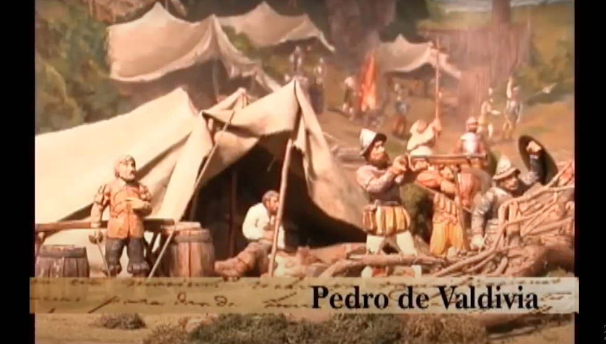
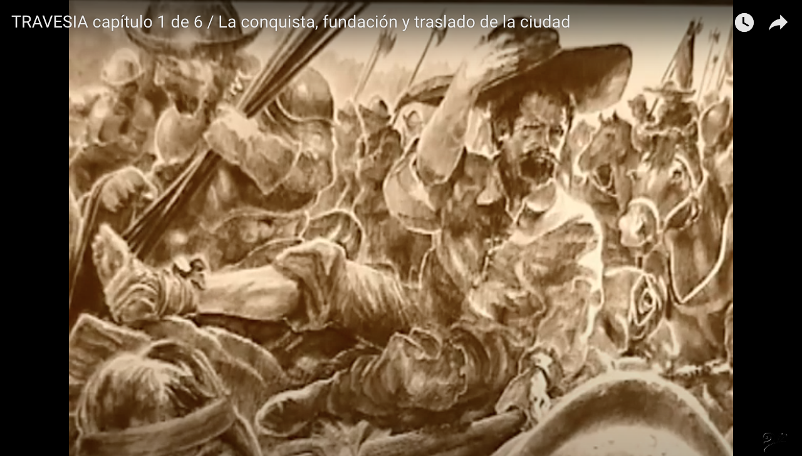

UNA TRAVESÍA INESPERADA
“Era un lunes por la mañana. En esa semana en particular, nos enfrentábamos al desafío de grabar las escenas del Capitán Battista Pastene, un intrépido explorador nacido en Génova al servicio de los españoles”. Así iniciaba la entrevista con mi colega, la periodista Pilar García Royo, quien había ocupado la gerencia ejecutiva de la CTP por más de 10 años. El día de la inauguración del Teatro Regional, sentí la necesidad de saludarla para reconocer un error de mi parte: mi escepticismo acerca de la existencia futura de este recinto.
Instalación del letrero en el terreno del teatro en la costanera.
Recordé cómo en una ocasión, durante el cumpleaños de una amiga en común, le había hecho una broma, al compartir su satisfacción, porque se había logrado financiar una gigantografía en el terreno que el gobierno había cedido para la construcción del teatro. Le pregunté si no temía que el letrero se oxidara después de tantos años sin ver el edificio terminado. Pero, mi sorpresa fue grande cuando descubrí que Pilar no estaba entre los invitados y que, de hecho, ya no vivía en Concepción. Seguramente, a muchos colaboradores les sucedió lo mismo. Pensé en lo positivo que hubiera sido incluir una placa con la lista de personas que, de una u otra manera, dieron vida a ese escenario regional.
Tiempo después, nos encontramos nuevamente en otra reunión de amigos y aproveché la oportunidad para felicitarla y preguntarle cómo se sentía al respecto. Me comentó que se sentía orgullosa y tranquila de haber contribuido, junto con miles de personas, a que este sueño ciudadano se hiciera realidad. Sobre las críticas a la administración actual, respondió que "las obras quedan y las personas pasan. El teatro tendrá buenas y malas administraciones, pero él estará ahí por muchos años, disponible para los artistas y el público. Eso es lo más importante". Sin embargo, le apenaba ver casi siempre tan poco movimiento alrededor de él. La propuesta original de su gestión, incorporaba escuelas de arte, universidades, municipios, empresas colaboradoras y socios, los que le darían vida al espacio. Ironizó con una frase que fue parte de la crítica hacia el proyecto, “Finalmente, no fue un elefante blanco, en realidad, parece un elefante dormido”.
UNA REPLICA EN LA BAHIA
Cuando le pregunté sobre qué proyecto destacaría entre todos los realizados por la CTP, ella eligió "Travesía", una serie de 8 documentales sobre la historia de Concepción con entrevistas a artistas actuales destacados. Fue en ese momento cuando compartió la anécdota de la grabación del capitán Pastene: “Era un lunes por la mañana. En esa semana en particular, nos enfrentábamos al desafío de grabar las escenas del Capitán Battista Pastene, un intrépido explorador nacido en Génova al servicio de los españoles. Pastene fue uno de los primeros en recorrer las majestuosas costas del Pacífico americano, surcando la bahía de Concepción y declarándola como tierra del Rey de España.
Marcelo Gotelli, director de Travesía, grabando al capitán Battista Pastene.
Para llevar a cabo este proyecto, teníamos previsto el alquiler de una barca de pesca. Nuestra intención era capturar tomas de plano medio y primer plano del personaje, evitando mostrar la embarcación en sí, dado que carecía de cualquier parecido con la original. Debido a las limitaciones financieras, no podíamos permitirnos la construcción de un escenario de época ni mucho menos la recreación de una embarcación a velas conforme a las utilizadas en el siglo XVI.
La creatividad y el ingenio se convirtieron en nuestras herramientas principales para superar las dificultades. Nos sumergimos en la planificación meticulosa de cada toma, buscando transmitir la esencia y la historia de Battista Pastene. Contratamos a un actor local que poseía tanto el aspecto físico como el atuendo necesarios para recrear con fidelidad al personaje.
Confiábamos en que nuestra pasión y dedicación lograrían compensar las limitaciones y brindarían a la audiencia una experiencia memorable y lo más auténtica posible. Nuestra perseverancia en la búsqueda de soluciones creativas, se convirtió en la clave para superar cualquier barrera impuesta y garantizar el éxito del proyecto.
TRAVESIA POR LA HISTORIA

De izquierda a derecha: Mónica Reyes, periodista; Carolina Benavides, productora general, y Pilar García Royo, conductora y productora ejecutiva durante una de las grabaciones de Travesía.
Diorama, Galería de la Historia de Concepción.
Dibujo a mano alzada de Pedro Valdivia para Travesía.
"Travesía" nació de mi profundo amor por la historia y mi compromiso en la promoción de la cultura local. Mi objetivo era recuperar y documentar las imágenes y narrativas que contaban la historia de Concepción, desde su fundación hasta la actualidad, al mismo tiempo que entrevistaba a destacados artistas locales. A pesar de haber postulado el proyecto al Consejo Nacional de Televisión sin éxito, mi determinación no se vio menguada.
Impulsada por el aliento de mis cercanos y amistades, postulé y obtuve financiamiento del Fondo Regional para la Cultura y las Artes, FONDART. Aunque ganarlo implicaba obtener un financiamiento significativo, era insuficiente para cubrir la totalidad de los costos necesarios. Fue entonces cuando decidí buscar el apoyo de la Corporación donde trabajaba. Presenté la idea a mi jefe y presidente de la Corporación Teatro Pencopolitano, Juan Eduardo King, proponiendo la posibilidad de cofinanciar la brecha restante a cambio de que la corporación promoviera simultáneamente su propio proyecto.
La visión de "Travesía" no sólo era captar la esencia histórica de Concepción, sino también crear una colaboración estratégica que beneficiara a ambas partes. Convencidos de que esta iniciativa sería una oportunidad única para enriquecer la identidad cultural de la ciudad, presentamos la propuesta con entusiasmo al Directorio. Confiábamos en que la sinergia entre la corporación y el proyecto contribuiría de manera significativa al desarrollo cultural y artístico de la comunidad. La propuesta fue aprobada y cumplió con creces sus objetivos.
Travesía se convirtió en una destacada plataforma para difundir el proyecto de construir un gran teatro en la Costanera Norte de Concepción. Además, gracias a las gestiones de la Corporación, la propuesta ya terminada, fue vendida para su transmisión a la señal regional e internacional de Televisión Nacional de Chile. Este éxito consolidó aún más la colaboración fructífera entre la corporación y el proyecto, demostrando que la unión de esfuerzos puede generar impactos duraderos en el ámbito cultural y artístico de la comunidad.
"Travesía" estaba conformado por un equipo de 8 profesionales jóvenes, bajo mi liderazgo, como creadora del proyecto y conductora de los documentales. Junto a mí, integraban el equipo: Marcelo Gotelli, director audiovisual y locutor en off; Carolina Benavides, productora general; Gabriela Verdugo, guionista; Mónica Reyes y Alondra Álvarez, periodistas; Claudia Gómez, secretaria, y Charly Méndez, asistente de producción.
Bueno, resulta que ese particular lunes, como de costumbre, me disponía a revisar la prensa escrita en busca de información relacionada con la cultura o la Corporación. Al leer el Diario El Sur, me encontré con una gran fotografía en la portada. En ella, se exhibía un barco a velas que resultaba ser la réplica del navío de Hernando de Magallanes, el explorador portugués al servicio de España que organizó la famosa expedición que culminó en la primera circunnavegación del mundo. Mi sorpresa fue mayúscula al leer que: ¡este navío estaba anclado en Talcahuano!

Reunión de pauta de Travesía, de derecha a izquierda aparecen: Rodrigo Durán, músico; Alejandro Witker, historiador; Marcelo Gotelli, director, y Gabriela Verdugo, periodista.
Tripulante del barco a velas réplica del navío de Magallanes.
Inmediatamente, llamé a Carolina Benavides, la productora, y a Marcelo Gotelli, el director, para compartirles la noticia y proponerles la idea de realizar las grabaciones de Pastene en esa embarcación. Ambos quedaron encantados con la propuesta, pero el desafío residía en cómo llevarla a cabo. Carolina tomó la decisión de ir con una de las periodistas al muelle donde estaba atracada la nave, con la intención de descubrir in situ cómo contactar con los dueños. Al llegar, me relataron que no encontraron a nadie a quien dirigir sus preguntas, por lo que decidieron alzar la voz y hacer señas con los brazos hacia aquellos que pudieran encontrarse en el mencionado barco. Con suerte, alguien las vio y, de inmediato, un par de miembros de la tripulación se aproximaron hacia tierra en uno de sus botes a remos. No hablaban español, sólo algo de inglés. Entonces, Carolina les explicó quiénes eran y qué queríamos. Ellos quedaron encantados con la idea ¿Pero cuánto dinero nos costaría navegar toda una mañana para las grabaciones en tal embarcación? Para sorpresa nuestra, nada. Exacto, no querían dinero. Sólo nos pidieron que lleváramos una docena de buenos vinos chilenos. Nada más. Con eso se daban por pagados.
Aún recuerdo el entusiasmo de Juan Eduardo King, cuando le expliqué la situación. Él solía navegar con amigos. Me contó sobre la vez que lo hizo en Chiloé y el Caribe. Le fascinó la idea de surcar la bahía en la réplica de un navío de antaño. Fuimos juntos al supermercado y llenamos un carro de los mejores vinos, quesos y embutidos. La vivencia fue mucho más que grabar unas tomas maravillosas para los documentales. La tripulación nos hizo un recorrido, explicando cómo había surgido la idea de navegar como Magallanes y cómo habían diseñado el barco. Ninguno tenía experiencia en navegación. La construcción se había hecho al lado de un río, donde habían montado un aserradero artesanal. De ahí salieron a mar abierto y empezaron su propia travesía alrededor del mundo. También quedaron encantados con la explicación que le dimos de las diferentes variedades de vinos chilenos que le llevamos. Tanto que, terminando de grabar, abrieron algunas botellas y las compartimos en la sala de estar del navío, junto a una estufa a leña. Fue una travesía muy especial y única.